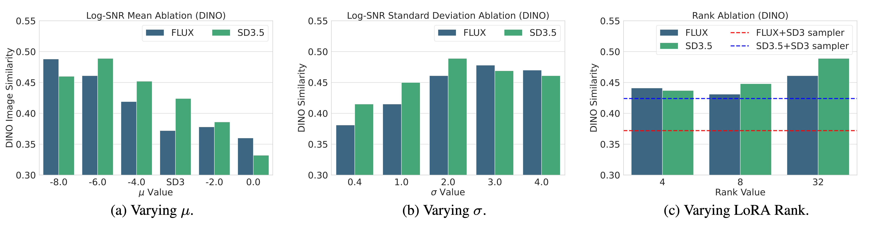

Style-Friendly SNR Sampler for Style-Driven Generation

Recent text-to-image diffusion models generate high-quality images but struggle to learn new, personalized styles, which limits the creation of unique style templates. In style-driven generation, users typically supply reference images exemplifying the desired style, together with text prompts that specify desired stylistic attributes. Previous approaches popularly rely on fine-tuning, yet it often blindly utilizes objectives and noise level distributions from pre-training without adaptation. We discover that stylistic features predominantly emerge at higher noise levels, leading current fine-tuning methods to exhibit suboptimal style alignment. We propose the Style-friendly SNR sampler, which aggressively shifts the signal-to-noise ratio (SNR) distribution toward higher noise levels during fine-tuning to focus on noise levels where stylistic features emerge. This enhances models' ability to capture novel styles indicated by reference images and text prompts. We demonstrate improved generation of novel styles that cannot be adequately described solely with a text prompt, enabling the creation of new style templates for personalized content creation.
We observe that stylistic features in text-to-image diffusion models emerge during the early, high-noise stages of the denoising process, characterized by lower signal-to-noise ratio (SNR) values that define noise levels in diffusion models. In the generation process, omitting style descriptions during just the initial 10% of steps hinders the model in capturing the desired styles, even if style prompts are included later. Based on these observations, we propose the Style-friendly SNR sampler, which biases the noise level distribution during the fine-tuning process toward higher noise levels where stylistic features emerge. By shifting the sampling of log-SNR values to focus on lower log-SNR (higher noise) regions critical for style learning, our method enables diffusion models to fine-tune with a strong emphasis on styles across various style templates.

Setting the mean μ of the log-SNR distribution to −6 or lower significantly enhances the ability of diffusion models to capture and reflect reference styles. This adjustment biases the fine-tuning toward higher noise regions where stylistic features emerge more effectively. With μ set to −6, even a low LoRA rank of 4, representing a less complex model configuration, achieves higher style alignment compared to a higher rank of 32 when using the SD3 sampler. This result highlights that focusing on higher noise levels has a more pronounced effect on style learning than increasing model capacity.
Style-friendly SNR sampler accurately captures the styles of reference images, reflecting stylistic features such as color schemes, layouts, illumination, and brushstrokes. In contrast, the standard SD3 sampler, DCO, IPAdapter with FLUX-dev, RB-Modulation, Style-Aligned, and GPT-4o prompt struggle to capture these key stylistic components or generate artifacts.

We expand the scope of style-driven generation by enabling applications such as generating coherent multi-panel images from a single reference and generating customized typography with unique styles.